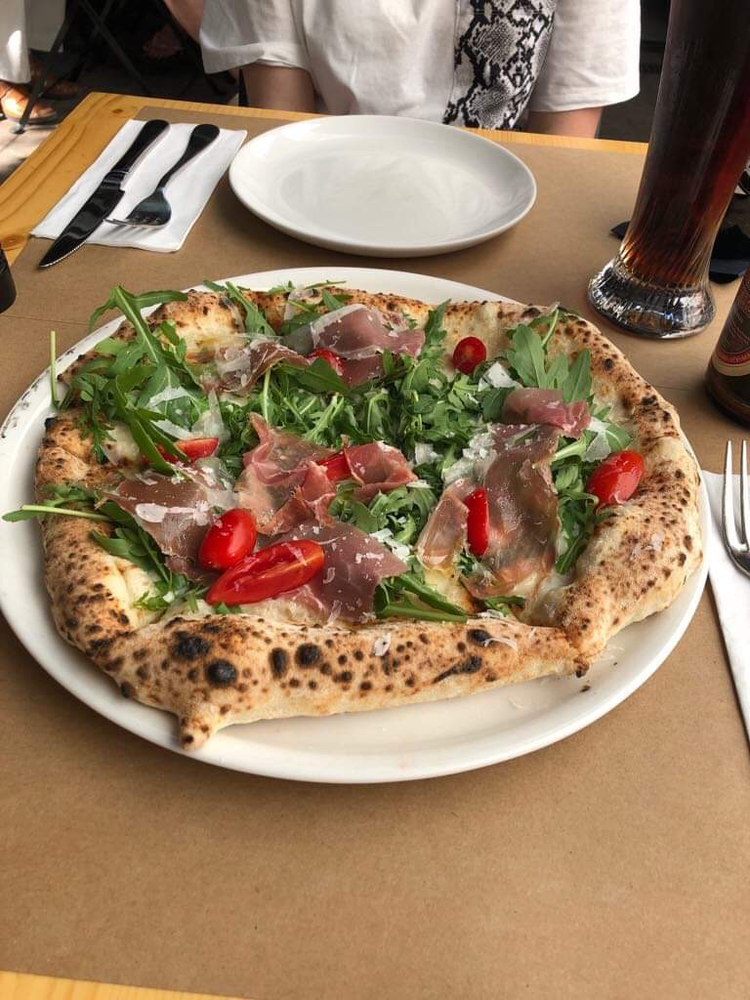
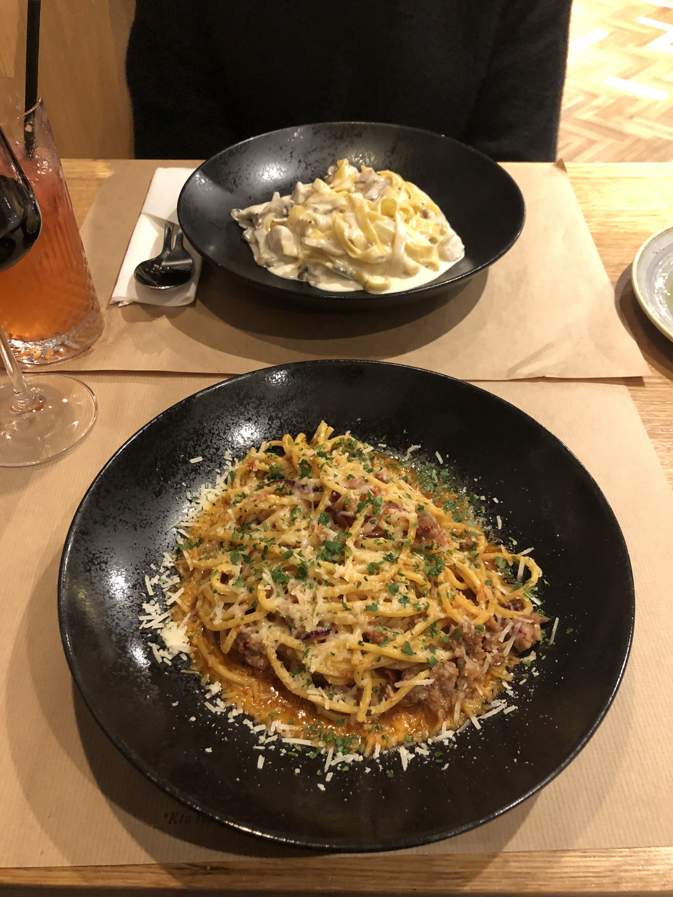
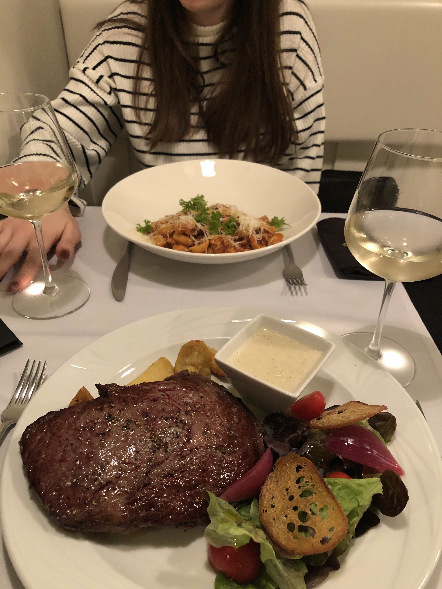

Nolio to włoska restauracja znajdująca się w centrum krakowskiego Kazimierza,
dokładniej na ulicy Krakowskiej 27. Bez problemu można dostać się tam komunikacją miejską,
czy też samochodem. Nolio to włoska restauracja serwująca przepyszne neapolitańskie pizze,
różnego rodzaju makarony i znakomite desery. Sekret kuchni tkwi w produktach sprowadzanych
prosto z Włoch. Pochodzi stamtąd 90% składników i prawie wszystkie wina. Dostarczają z
Włoch produkty jedynie certyfikowane DOP, DOCG, IGP. Jest to kuchnia inspirowana samymi
Włochami i dlatego warto ją odwiedzić! Z czystym sumieniem mogę powiedzieć, że w Nolio
zawsze zjem najpyszniejszą pizze w całym Krakowie, a próbowałam ich wiele, ponieważ
to moje ulubione danie.

Pasta Bar
Przechodząc z Kazimierza na krakowski Rynek znajdziemy kolejną wspaniałą włoską restaurację
o nazwie Pasta Bar. Znajduje się ona dokładnie na ulicy Sławkowskiej 13.
To miejsce jest bardzo klimatycznie, podobnie jak Nolio serwuje wspaniałe dania kuchni
włoskiej, jednak tutaj moje serce skradły makarony! Są to rewelacyjne smaki, dopracowane
w najmniejszych szczegółach. Wszelkie składniki są najwyższej jakości i niestety mimo
wielu prób nie udało mi się odtworzyć wspomnianych makaronów w zaciszu domowym.
Naprawdę warto!

Sant’Antioco
Na ulicy Mikołajskiej 30 znajdziemy restaurację prowadzoną przez samego Włocha.
Sant'Antioco to miejsce, w którym spróbujemy specjałów sardynii i kuchni
śródziemnomorskiej. Lokal jest przestronny, bardzo ładnie urządzony.
Warto wspomnieć, iż restauracja ma najlepsze opinie wśród użytkowników
portalu TripAdvisor, który pozwala odnaleźć dobre restauracje na
krakowskich ulicach. W Sant’Antioco dania rozpływają się w ustach,
a obsługa rewelacyjnie zajmuje się gośćmi. Stale kontrolują czy nic
nam nie brakuje, a w przypadku zamówienia butelki alkoholu nie pozwalają
nam na pusty kieliszek. W restauracji możemy spotkać wspomnianego właściciela
- Włocha i zamienić z nim kilka słów - wspaniała i niezapomniana przygoda.

Pizzatopia
Nie mogłam pominąć miejsca jakim jest Pizzatopia, czyli pizzeria wypiekająca
pizze maksymalnie szybko. Jest to nie byle jakie miejsce -
sam wybierasz składniki swojej pizzy, a proces jej tworzenia
trwa maksymalnie 5 minut od rozpoczęcia zamówienia. Cena pizzy
jest stała, dlatego możesz zamówić tyle składników na ile masz ochotę,
zawsze w dobrej cenie. Dostajesz pokrojona na 8 kawałków prostokątną
pizze ze spersonalizowanymi składnikami. W Krakowie znajdują się trzy
lokale, jeden na ulicy Szewskiej 22, kolejny na ulicy Grodzkiej 48 oraz
na ulicy plac Nowy 4.